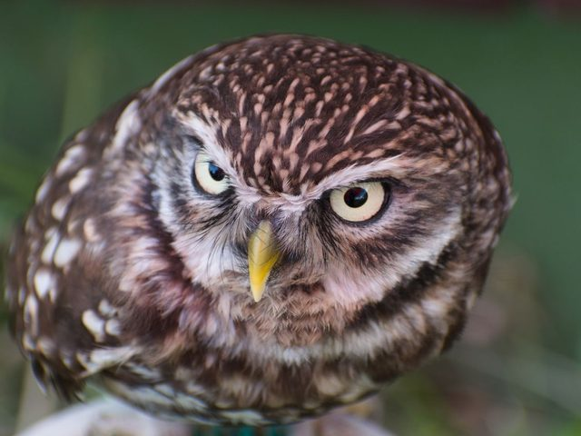
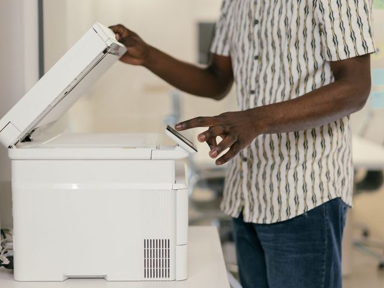
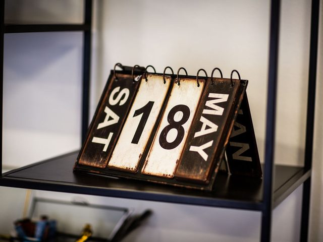
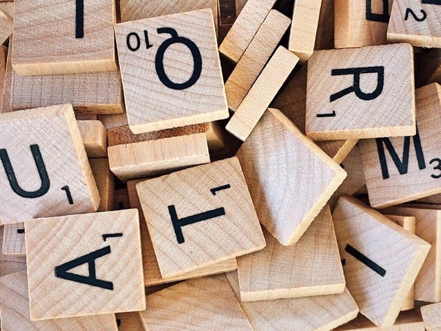
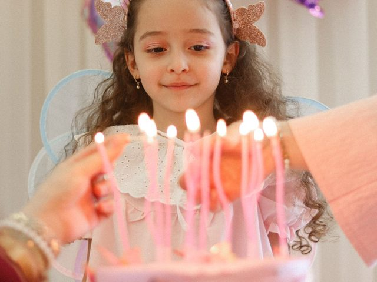

VOCABULARY · LALA WORD UNIT 13
Is It True?．一字多義（十三）
post 是網路上的貼文，也是「郵寄」；lie 是說謊，也是「躺」。這個單元有 5 個主題單字、16 個更多單字，再整理 wish／hope，和字尾 -er／-or、-ess、字首 inter-。
共 32 個單字．點 🔊 聽發音

1postn. / v.
貼文；公布的資訊；郵政；郵件；發布（資訊）；寄出（信件、包裹）
post - posted - posted - posting
- 1n.貼文；公布的資訊Her post got 500 likes.她的貼文有五百個讚。
- 2n.郵政；郵件 post office 郵局I sent the gift by post.我用郵寄的方式寄禮物。
- 3v.發布（資訊）Don't post your address online.不要把你的地址貼到網路上。
- 4v.寄出（信件、包裹）Can you post this letter for me?你可以幫我寄這封信嗎？

2lien. / v.
謊言；說謊；躺；臥
說謊：lie - lied - lied；躺：lie - lay - lain
- 1n.謊言 tell a lie 說謊Don't tell a lie.不要說謊。
- 2v.說謊 lie - lied - lied - lyingHe lied to his mom about his grades.他對媽媽謊報成績。
- 3v.躺；臥 lie - lay - lain - lying；lie down 躺下The cat is lying on the sofa.貓躺在沙發上。

3trickn. / v.
惡作劇；騙局；欺騙；技巧；訣竅
trick - tricked - tricked - tricking
- 1n.惡作劇；騙局 play a trick on 對…惡作劇They played a trick on their teacher.他們對老師惡作劇。
- 2v.欺騙 trick + 人 + into + V-ing 騙某人做The man tricked me into buying a fake watch.那個男人騙我買了假手錶。
- 3n.技巧；訣竅 magic trick 魔術Here is a trick to remember new words.這是一個記新單字的訣竅。
4checkv. / n.
檢查；確認；檢查；支票；帳單
check - checked - checked - checking
- 1v.檢查；確認 check out 去看看Check your answers before you hand in the test.交考卷前檢查你的答案。
- 2n.檢查The doctor gave me a quick check.醫生幫我做了簡單的檢查。
- 3n.支票Can I pay by check?我可以用支票付款嗎？
- 4n.帳單Waiter, can we have the check, please?服務生，請給我們帳單。

5seriousadj.
嚴肅的；認真的；嚴重的
serious - more serious - most serious
- 1adj.嚴肅的Why do you look so serious?你為什麼看起來這麼嚴肅？
- 2adj.認真的 be serious about 對…是認真的Are you serious? You're moving to Japan?你是認真的嗎？你要搬去日本？
- 3adj.嚴重的Air pollution is a serious problem.空氣汙染是很嚴重的問題。
6batn. / v.
蝙蝠；球棒；用球棒擊球
bat - batted - batted - batting
- 1n.蝙蝠 as blind as a bat 視力很差Bats sleep in the daytime.蝙蝠白天睡覺。
- 2n.球棒He hit the ball with a bat.他用球棒打球。
- 3v.用球棒擊球It's your turn to bat.輪到你打擊了。

7bookn. / v.
書；預訂
book - booked - booked - booking
- 1n.書I borrowed three books from the library.我從圖書館借了三本書。
- 2v.預訂Dad booked a hotel room for us.爸爸幫我們訂了飯店房間。

8copyv. / n.
抄襲；複製；模仿；複製品；影本；一本；一份
copy - copied - copied - copying；複數 copies
- 1v.抄襲Don't copy your classmate's homework.不要抄同學的功課。
- 2v.複製 copy and paste 複製貼上Copy the file and send it to me.把檔案複製一份寄給我。
- 3v.模仿My little sister copies everything I do.我妹妹什麼都學我。
- 4n.複製品；影本This painting is just a copy.這幅畫只是複製品。
- 5n.一本；一份The book sold a million copies.這本書賣了一百萬本。
9crazyadj. / n.
發瘋的；著迷的；很生氣的；瘋子
crazy - crazier - craziest
- 1adj.發瘋的 go crazy 發瘋The noise is driving me crazy.那噪音快把我逼瘋了。
- 2adj.著迷的 be crazy about 為…著迷My brother is crazy about basketball.我哥哥超迷籃球。
- 3adj.很生氣的Mom will go crazy if she sees this mess.媽媽看到這團亂會氣炸。
- 4n.瘋子Only a crazy would swim in this icy water.只有瘋子才會在這麼冰的水裡游泳。

10gymn.
體育館；健身房；體操；體育課
複數 gyms
- 1n.體育館We play basketball in the gym on rainy days.下雨天我們在體育館打籃球。
- 2n.健身房My aunt goes to the gym every morning.我阿姨每天早上去健身房。
- 3n.體操；體育課Bring your shoes for gym class.體育課要帶運動鞋。

11interestn. / v.
興趣；利益；利息；使感興趣
interest - interested - interested - interesting
- 1n.興趣She has a strong interest in science.她對科學很有興趣。
- 2n.利益The leader should think about the interests of everyone.領導者應該考慮每個人的利益。
- 3n.利息The bank pays interest on your savings.銀行會為你的存款付利息。
- 4v.使感興趣 be interested in 對…有興趣History doesn't interest me.歷史引不起我的興趣。

12nobodypron. / n.
沒有人；小人物
複數 nobodies
- 1pron.沒有人Nobody knows the answer.沒有人知道答案。
- 2n.小人物He was a nobody before he became famous.他成名前只是個無名小卒。

13popv. / n. / adj.
（使）爆開；爆（玉米花）；流行音樂；流行歌曲；流行的；通俗的
pop - popped - popped - popping
- 1v.（使）爆開The balloon popped.氣球破了。
- 2v.爆（玉米花）Let's pop some corn for the movie.我們爆點爆米花配電影吧。
- 3n.流行音樂；流行歌曲I like K-pop.我喜歡韓國流行音樂。
- 4adj.流行的；通俗的She is a pop singer.她是流行歌手。
14racev. / n.
和…比賽速度；比賽（速度）；種族；民族
race - raced - raced - racing
- 1v.和…比賽速度I'll race you to the gate!我們比賽看誰先跑到大門！
- 2n.比賽（速度）Our class won the relay race.我們班贏了接力賽。
- 3n.種族；民族We should respect people of every race.我們應該尊重每個種族的人。
15sentencen. / v.
句子；判決；刑罰；宣判
sentence - sentenced - sentenced - sentencing
- 1n.句子Make a sentence with the word "happy."用 happy 造一個句子。
- 2n.判決；刑罰The thief got a two-year sentence.小偷被判兩年徒刑。
- 3v.宣判The judge sentenced him to two years in prison.法官判他兩年徒刑。

16sinceadv. / prep. / conj.
從那時起；自…以來；自從…；因為；既然
- 1adv.從那時起He moved away last year, and I haven't seen him since.他去年搬走，從那之後我就沒見過他。
- 2prep.自…以來I have lived here since 2020.我從 2020 年起就住在這裡。
- 3conj.自從…We have been friends since we were five.我們從五歲起就是朋友。
- 4conj.因為；既然Since it's raining, let's stay home.既然在下雨，我們待在家吧。
17slimadj. / v.
苗條的；渺茫的；微小的；減輕體重
slim - slimmer - slimmest；slim - slimmed - slimmed - slimming
- 1adj.苗條的She is tall and slim.她又高又苗條。
- 2adj.渺茫的；微小的We only have a slim chance of winning.我們贏的機會很渺茫。
- 3v.減輕體重 slim down 減重Dad is trying to slim down.爸爸正在努力減重。

18spellv. / n.
拼字；輪替；接手；一段時間；咒語；魔咒
spell - spelled（spelt） - spelled（spelt） - spelling
- 1v.拼字How do you spell your name?你的名字怎麼拼？
- 2v.輪替；接手Can I spell you for a while?我可以換手幫你一下嗎？
- 3n.一段時間We had a spell of hot weather last week.上星期熱了一陣子。
- 4n.咒語；魔咒The witch put a spell on the princess.巫婆對公主下了咒。

19tipv. / n.
給小費；小費；建議；訣竅；（使）傾斜；翻倒
tip - tipped - tipped - tipping
- 1v.給小費In the U.S., people tip the waiter.在美國，人們會給服務生小費。
- 2n.小費We left a tip on the table.我們在桌上留了小費。
- 3n.建議；訣竅Here are some tips for learning English.這裡有一些學英文的訣竅。
- 4v.（使）傾斜；翻倒Don't tip your chair back.不要把椅子往後翹。

20touchv. / n.
觸摸；觸覺；感動
touch - touched - touched - touching
- 1v.觸摸Please don't touch the paintings.請勿觸摸畫作。
- 2n.觸覺 keep in touch 保持聯絡Babies learn about things by touch.嬰兒靠觸覺認識東西。
- 3v.感動Her story touched everyone.她的故事感動了每個人。

21wishv. / n.
希望（不太可能的事）；願望；祝福；祝福（wishes）
wish - wished - wished - wishing
- 1v.希望（不太可能的事） I wish + 過去式：與現在事實相反I wish I could fly.真希望我會飛。
- 2n.願望 make a wish 許願Close your eyes and make a wish.閉上眼睛許個願。
- 3v.祝福We wish you a happy new year.祝你新年快樂。
- 4n.祝福（wishes）Best wishes to you and your family.祝福你和你的家人。
22farmern.
農夫
farm + -er
- 1n.農夫The farmer grows rice and corn.農夫種稻米和玉米。
23actorn.
男演員；演員
act + -or
- 1n.男演員；演員He is a famous actor.他是有名的演員。
24waitern.
男服務生
wait + -er
- 1n.男服務生The waiter brought us some water.服務生端水給我們。
25mail carriern.
郵差
carry + -er
- 1n.郵差The mail carrier comes at ten every morning.郵差每天早上十點來。
26can openern.
開罐器
open + -er
- 1n.開罐器I need a can opener to open the beans.我需要開罐器打開豆子罐頭。
27CD playern.
CD 播放器
play + -er
- 1n.CD 播放器Grandpa still uses a CD player.爺爺還在用 CD 播放器。
28actressn.
女演員
act + -ress
- 1n.女演員She won the Best Actress award.她得到最佳女主角獎。
29waitressn.
女服務生
wait + -ress
- 1n.女服務生The waitress took our order.女服務生幫我們點餐。
30princessn.
公主
prince + -ess
- 1n.公主The princess lived in a big castle.公主住在一座大城堡裡。
31interviewn. / v.
面試；採訪；採訪；面試
inter- + view
- 1n.面試；採訪I have a job interview tomorrow.我明天有工作面試。
- 2v.採訪；面試The reporter interviewed the singer.記者採訪了那位歌手。
32Internetn.
網際網路
inter- + net
- 1n.網際網路 surf the Internet 上網You can find a lot of information on the Internet.你可以在網路上找到很多資訊。
FOCUS
易混淆字：wish 和 hope
| 單字 | 用法 | 例句 |
|---|---|---|
| wish | 希望不太可能或不會發生的事：I wish + 過去式；也用來祝福 | I wish I were taller.／I wish you good luck. |
| hope | 希望「有可能」發生的事：hope + to V／hope + that 子句 | I hope I can pass the test. |
FOCUS
字尾 -er／-or：做某件事的人或東西
| 原來的字 | 加字尾 | 意思 |
|---|---|---|
| farm 耕作 | farmer | 農夫 |
| act 演戲 | actor | 演員 |
| wait 等候 | waiter | 服務生 |
| carry 搬運 | mail carrier | 郵差 |
| open 打開 | can opener | 開罐器 |
| play 播放 | CD player | CD 播放器 |
FOCUS
字尾 -ess：女性
| 原來的字 | 加 -ess | 意思 |
|---|---|---|
| actor 男演員 | actress | 女演員 |
| waiter 男服務生 | waitress | 女服務生 |
| prince 王子 | princess | 公主 |
FOCUS
字首 inter-：在…之間；互相
| 原來的字 | 加 inter- | 意思 |
|---|---|---|
| view 看法 | interview | 面試；採訪 |
| net 網子 | Internet | 網際網路 |
FOCUS
一字多義：最常見 vs. 容易忽略的意思
| 單字 | 最常見的意思 | 容易忽略的意思 |
|---|---|---|
| lie | 說謊 | 躺（lie - lay - lain） |
| check | 檢查 | 支票；帳單 |
| bat | 球棒 | 蝙蝠 |
| book | 書 | 預訂 |
| race | 比賽 | 種族 |
| sentence | 句子 | 判決 |
| spell | 拼字 | 咒語；一段時間 |
| tip | 小費 | 訣竅；傾斜 |